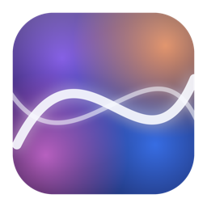

R9 Motion
Living, GPU-rendered wallpapers for your Mac.
curl -fsSL https://raw.githubusercontent.com/XPro-Gamer-Rhine/R9-Motion-app/main/install.sh | bash🎨 21 living patterns
From the R9 signature Fluid to Aurora, Caustics, Liquid Chrome, Ferrofluid and Halftone — all pure Metal math, rendered at native XDR resolution.
🖥 Every monitor, your way
One synced look across displays or an individual wallpaper per monitor, with copy-to-all.
🌊 Your colors
Watery presets — Clear Water, Liquid Glass, Rain on Glass, Deep Ocean — or any three custom colors, plus speed, scale and a pattern shuffle.
🎬 Video & GIF wallpapers
Loop your own footage — Full Screen, Fit or Stretch per display. (Patterns stay far lighter on memory.)
🍃 Featherweight, always on
~36 MB memory, 2–3% CPU, pauses completely when a fullscreen app covers the desktop. The entire app is under 1 MB.
🔄 Updates itself
Daily release check; one click reinstalls in the background and relaunches. Install once, forever fresh.